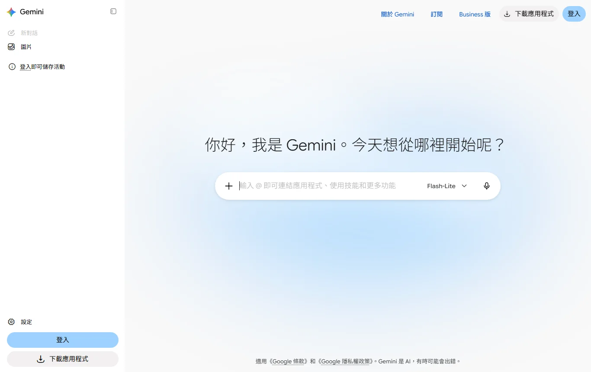

新手工具入門 · 問問題、寫東西
AI 聊天助手
免費約 5 分鐘讀完
ChatGPT、Gemini、Claude 這些 AI 聊天助手，像傳訊息一樣打字就能用。它們的核心其實只會做一件事：猜下一個字。會記得前面的話、會知道今天的天氣，都是在這件事上加的巧思；也因為它只是在「接話」，用的時候要記得自己把關。
01常見的有這幾個，用法都一樣
| 名稱 | 公司 | 網址 |
|---|---|---|
| ChatGPT | OpenAI | chatgpt.com |
| Gemini | gemini.google.com | |
| Claude | Anthropic | claude.ai |
| Grok | xAI | grok.com |
| Meta AI | Meta | meta.ai |
它們都有免費版，用 Google 帳號或 Email 就能註冊；付費版可以用更強的版本、用得更多。用法幾乎一樣：打字 → 送出 → 看回答 → 繼續追問。挑一個順手的就好。

02它的核心只做一件事：猜下一個字
這類 AI 的本體叫做 LLM（大型語言模型）。它讀過超大量的文字：課堂上提到，有些模型讀過的字量，大約是一個人一輩子讀的字的 1.5 萬倍。
但它每次其實只做一件事：看前面所有的字，猜下一個字最可能是什麼，然後一個字一個字接下去，就變成一整段回答。
因為是「依機率挑」，所以同一個問題，每次的回答都會有點不一樣（這就是第 3 堂課的主題：AI 為什麼每次都不一樣）。
所以要小心 它的目標是「接得很順」，不是「說得正確」。老師形容它是很會接話的「唬爛王」：可能一本正經地說錯，這叫做幻覺。重要的內容一定要自己讀過、查證過。
03只會猜字，為什麼記得前面說過的話？
其實 AI 本身不會「記住」你。秘密是：每次你按下送出，App 會把整段對話紀錄，連同新問題一起交給 AI 重新讀一遍。
你按下送出時，AI 收到的其實是這一整串 ↓
幫我寫一封請假信，週五要請一天假
好的，以下是請假信……
語氣再客氣一點
所以它知道「語氣再客氣一點」指的是那封請假信。AI 讀的時候還有一個注意力機制（第 5 堂課的內容），會特別注意前面和現在問題有關的字，就像我們讀文章時會回頭找重點。
實用小技巧 開「新對話」就等於一張白紙，它不會記得之前聊過什麼。換一個主題時，開新對話效果比較好。
04只讀過舊資料，為什麼知道今天的天氣？
AI 讀的資料停在它被訓練完成的那一天，所以它本身不知道今天發生什麼事。它能回答天氣，是因為會使用工具（第 8 堂課的內容）：
① 你問台北今天會下雨嗎？
→
② AI 判斷這要查最新資料，我來呼叫「上網搜尋」工具
→
③ 工具回傳今天降雨機率 70%
→
④ AI 回答根據查到的資料：很可能會下雨，記得帶傘
計算機、上網搜尋、查資料庫都是工具。AI 不擅長的事，就交給工具做，它負責判斷什麼時候該用、再把結果講成人話。有上網查的回答，下面通常會附上來源，可以點進去確認。
05所以用的時候，要記得兩件事
- 不要貼個資和公司機密。它要「整段對話重讀」才記得住，代表對話會存在雲端，即使 AI 不拿來學習，也可能因帳號被盜等原因外洩（第 6 堂課的提醒）。
- AI 寫的東西，一定要自己讀過一次。它的目標是接得順、不是說得對，可能一本正經地說錯；就算沒寫錯，也不一定寫對了你的意思，要用自己的專業判斷。